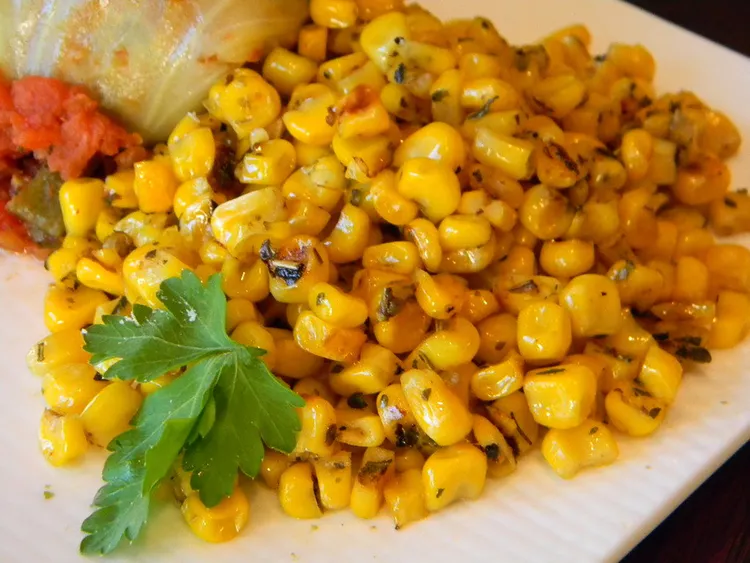

Irresistible Italian Corn

Description
This is a delicious seasoned corn side dish. DELICIOUS.
Must TRY NOW!!!
Ingredients
- 1 1/2 tablespoons butter
- 2 1/2 cups whole kernal sweet corn
- 1 tablespoon Italian seasoning
- 1 pinch salt and ground black pepper
Directions
- Heat a skillet over high heat. Heat butter in hot skillet
until almost completely melted; stir corn.
- Season corn with Italian seasoning, salt, and black pepper.
Cooked seasoned corn until light golden brown, about
5 minutes.